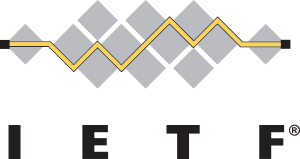

Libin Liu
Associate Researcher Find more at:  |
Biography
I am currently an Associate Researcher at Zhongguancun Laboratory, working closely with Dr. Li Chen and Prof. Dan Li. From 2020 to 2021, I was with Networking Platform Department, Tencent and Theory Laboratory, Huawei Hong Kong Research Center. I received my Ph.D. from Department of Computer Science, City University of Hong Kong in 2020, advised by Dr. Hong Xu. Before joining CityU, I got my B.E. degree in Software Engineering from Shandong University.
Research Interests
I am broadly interested in building intelligent and secure networking systems. My current focus is agentic systems, network simulation, and routing security.
Prospective Students/Collaborators
We are looking for self-motivated undergraduate and graduate students who are interested in research on AI systems. Please feel free to send your resume to me.
News
03/2026, I attended IETF 125 in Shenzhen and presented our drafts at WG meetings of SAVNET, BMWG, and SIDROPS.
02/2026, Promoted to Associate Researcher at Zhongguancun Laboratory.
11/2025, I attended IETF 124 in Montreal and presented The Updates on Benchmarking Methodology for intra-domain and inter-domain SAV in BMWG and SAVNET WG meeting.
09/2025, Morbius is accepted by IEEE Transactions on Services Computing.
08/2025, I was selected as the member of IETF Nominating Committee 2025/2026. Happy to contribute to IETF.
07/2025, I attended IETF 123 in Madrid and presented The Updates on Inter-domain SAVNET PS Problem and The Updates on Benchmarking Methodology for SAV.
06/2025, One paper on differentiable network simulator is accepted by IEEE TNSE.
05/2025, One paper on accelerating point cloud analytics is accepted by Elsevier Computer Networks.
03/2025, I attended IETF 122 in Bangkok and presented Inter-domain SAVNET PS Problem, Inter-domain SAVNET Architecture, and Benchmarking Methodology for SAV.
12/2024, ZoomSynth accepted to USENIX NSDI 2025.
11/2024, I attended IETF 121 in Dublin and presented Inter-domain SAVNET Architecture, SiSPI, and Benchmarking Methodology for SAV.
07/2024, I attended SAVNET WG meeting, BMWG meeting, and ANRW 2024 online in IETF 120.
06/2024, UniSAV accepted to IRTF ANRW 2024.
03/2024, I attended IETF 119 in Brisbane and presented SAVOP and Inter-domain SAVNET Architecture.
03/2024, Our work on accelerating FL model training, Marvel, is accepted by Elsevier Computer Networks.